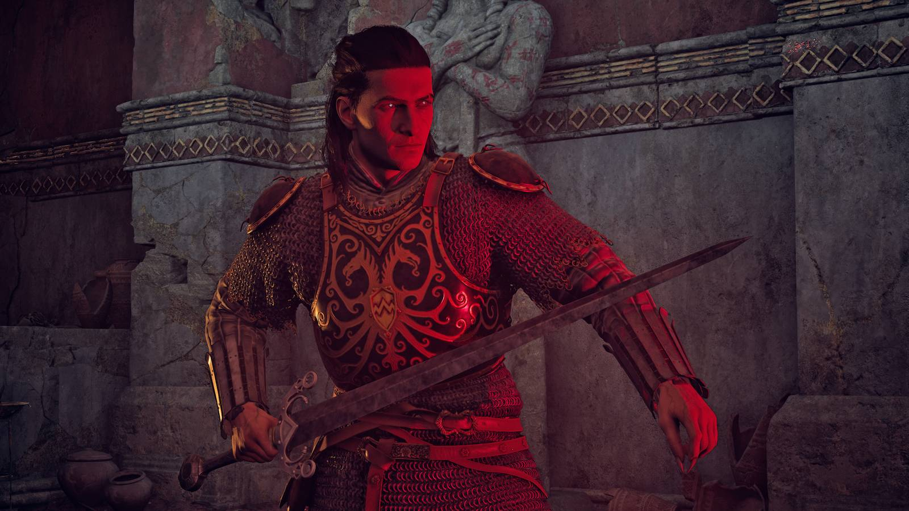

Gaming · 17 Sep 2026
Blood of Dawnwalker Sequel May Drop Distinctive Time Mechanic

Game director Konrad Tomaszkiewicz reveals that the controversial time mechanic featured in the upcoming vampire RPG Blood of Dawnwalker might not return in a potential sequel.
According to Polygon, the developers of the upcoming role-playing game Blood of Dawnwalker are already considering changes for future installments. Game director Konrad Tomaszkiewicz also spoke with Eurogamer about the game's distinctive time-cost system and the possibility that a follow-up could take a different approach.
The time mechanic is one of the defining ideas attached to Blood of Dawnwalker. Its role in the game creates a constraint around how players approach the story and its objectives, making the system an important part of the title's identity rather than simply another gameplay feature.
The reported comments are specifically about a potential sequel, rather than a change to the existing game's design. That distinction is important: the sources describe what could happen in a future installment, while the current title remains the focus of the developers' work.
If the series continues, removing or changing the mechanic could allow the developers to experiment with a different way of structuring time, quests and player choices. At this stage, however, the cited reports do not establish a final sequel design or confirm that a sequel has entered full production.
For players following Blood of Dawnwalker, the discussion provides an early indication of how the developers may evaluate the ideas introduced by the first game. Any eventual sequel would have the opportunity to retain, modify or replace those systems based on the experience of the original release.
Sources
This article was produced by the C. O. Eric AI Newsroom from the cited sources. It is published only after automated evidence and safety checks.